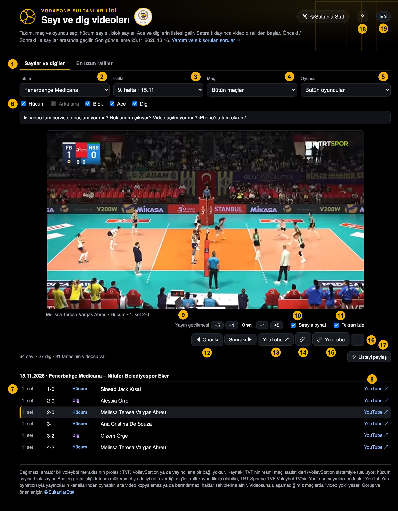
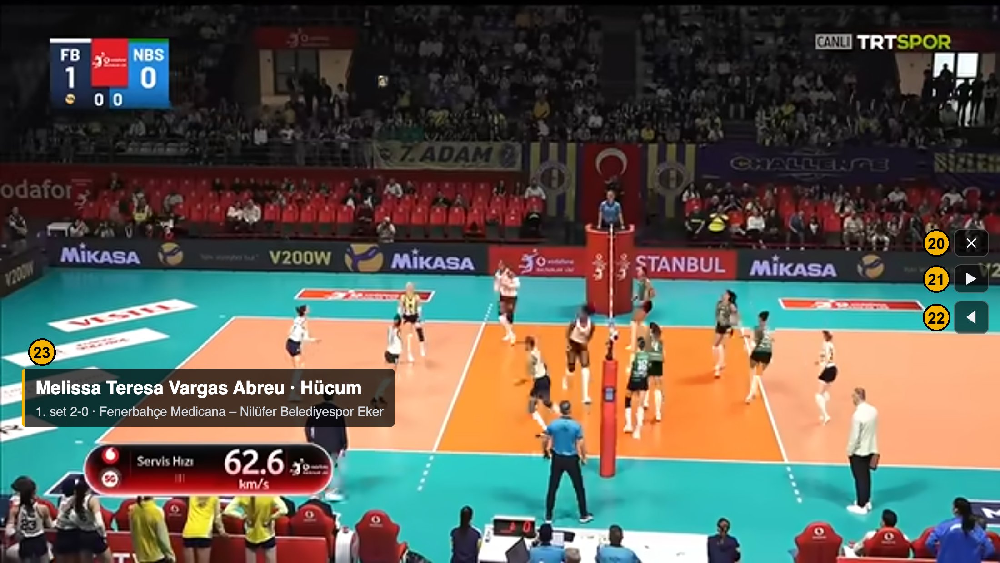

Bu sitede Sultanlar Ligi'ndeki her hücum sayısı, blok sayısı, Ace ve iyi dig'in maç videosundaki anı var. Takımı, haftayı, maçı ya da oyuncuyu seçersin; listeden bir satıra tıklayınca video o rallinin servisinden başlar. Sırayla oynat açıksa ralli bitince sıradakine geçer, bir oyuncunun bütün sayılarını arka arkaya izleyebilirsin.
This site has the moment in the match video of every attack point, block point, ace and good dig in the Sultanlar League. Pick a team, week, match or player; click a row and the video starts at the serve of that rally. With Play next on, it moves to the next one when the rally ends, so you can watch all of a player's points in a row.


iPhone'da tarayıcılar tam ekranda adres çubuğunu gizlemiyor; siteyi Safari'den ana ekrana eklersen uygulama gibi açılır (aşağıda).
On iPhone, browsers keep the address bar in full screen; add the site to the home screen from Safari and it opens like an app (below).
Video, servisten yaklaşık 2 saniye önce başlamalı. Erken ya da geç başlıyorsa oynatıcının altındaki Yayın gecikmesi (9) ile ayarlayabilirsin:
The clip should start about 2 seconds before the serve. If it starts too early or too late, adjust it with Broadcast delay (9) under the player:
Videodaki an hesaplanıyor: VolleyStation kaydındaki rallinin başlama saati, YouTube yayınının başlama saati ve yayının salondan gecikmesi. Gecikme maçtan maça değişiyor; bir kısmını videoda servis anını işaretleyerek ölçtük, kalanlarda yayıncının ortalama gecikmesi kullanılıyor.
The moment in the video is computed from the rally start time in the VolleyStation record, the start time of the YouTube broadcast and how far the broadcast lags behind the hall. The lag differs from match to match; we measured it for some matches by marking the serve in the video, the others use the broadcaster's average.
Yaklaşık hesaplananlar. İstatistiği tutan bazı rallileri ralli bittikten sonra giriyor; kayıtta bu rallinin başlama saati 15–50 saniye geç görünüyor. Bunları rallinin süresinden tanıyoruz (kayıtta 13 temaslı bir ralli 2 saniye sürmüş görünüyor) ve başlangıcı rallinin bitişinden, temas sayısından ve önceki ralliden tahmin ediyoruz. Videoda ölçtüğümüz örneklerde tahmin servisten en çok 4 saniye sapıyor; bu rallilerde Yayın gecikmesiyle küçük bir ayar gerekebilir.
Estimated starts. The statistician enters some rallies only after they end; the record then shows the rally starting 15–50 seconds late. We spot these from the rally length (a 13-contact rally that seems to last 2 seconds) and estimate the start from the end of the rally, the number of contacts and the previous rally. In the examples we checked in the video, the estimate is within 4 seconds of the serve; a small Broadcast delay tweak may help on these.
Oyuncunun kendi kazandığı sayılar: hücum sayısı, blok sayısı ve Ace; rakibin hatasından gelen sayılar yok. Dig'lerden istatistiği tutanın mükemmel ya da iyi notu verdikleri var; dig'den sonra ralli kaybedilmiş olabilir. İlk açılışta dig'ler kapalıdır, türlerden (6) açılır.
Arka sıra: ralli başındaki dizilişe göre arka sırada (1, 6 ya da 5. bölgede) olan oyuncunun hücum sayıları; kurala göre 3 metre çizgisinin gerisinden vurulmuş hücumlar. Görmek için Hücum'un işaretini kaldırıp Arka sıra'yı seç. Hücumun nereden yapıldığı kayıtta yok; arka sıradaki smaçörün hücumları çoğunlukla pipe'tır ama ayrı gösterilmiyor.
Sayılar TVF'nin resmi maç istatistiklerinden (VolleyStation sistemiyle tutuluyor), videolar TRT Spor ve TVF Voleybol TV'nin YouTube yayınlarından. Maç günlerinden sonra güncelleniyor; son güncelleme ana sayfanın üstünde yazıyor. Kayıtta maçtan sonraki birkaç gün içinde videodan düzeltmeler yapılabiliyor, bu yüzden bir maçın sayıları birkaç gün içinde biraz değişebilir.
Maçın yayın kaydını YouTube'da bulamadık ya da kaydın başlama saati yok. "Video yok" yazan maçlar ana sayfada listenin üstünde yazar. Yayın sonradan yüklenirse eklenir.
Sayfadaki oynatıcı, tarayıcının üçüncü taraf çerez engeli yüzünden seni tanıyamıyor. Chrome'da: Ayarlar →
Gizlilik ve güvenlik → Üçüncü taraf çerezleri → İzin verilen siteler → Ekle → [*.]youtube.com, sonra
sayfayı yenile. "YouTube ↗" ise videoyu YouTube'da açar, orada Premium her durumda geçerli.
iPhone'daki tarayıcılar tam ekranda adres çubuğunu gizlemiyor. Siteyi Safari'den ana ekrana ekle (Paylaş ya da ••• → Ana Ekrana Ekle → Ekle); ana ekrandaki simgeden uygulama gibi, adres çubuğu olmadan açılır. Android'de Chrome menüsünden "Ana ekrana ekle".
Bazı yayınlar yayıncının ayarı yüzünden Türkiye dışında izlenemiyor; bunu sitede değiştiremiyoruz. Yayınlar Türkçe; altyazı kapalı başlar, oynatıcıdaki CC düğmesiyle açılır.
Ralli bittikten sonra: Tekrarı izle kapalıyken 10 saniye, açıkken 20 saniye (yayındaki tekrar da görünsün diye); dig'lerde 4 saniye; ama en geç bir sonraki ralli başlamadan, video sonraki servise sarkmaz. Geçişte ekran kısa bir süre kararır ve sıradaki sayının alt yazısı çıkar.
Adres çubuğundaki link her zaman o anki seçimi (takım, hafta, maç, oyuncu, türler) açar. "Listeyi paylaş" (17) bu seçimin linkini, 🔗 (14) sadece oynayan sayının linkini, 🔗 YouTube (15) aynı sayının saniyeli YouTube linkini verir (X'te gönderinin içinde video oynar; sitenin linkini gönderinin altına yanıt olarak ekleyebilirsin). "Son hafta" seçiliyken bu iki düğmeyle paylaşılan link haftanın numarasıyla gider (ör. 9. hafta), gelecek hafta da aynı sayıları açar. Adres çubuğundaki link ise her zaman en son haftayı açar; "son haftanın sayıları" için yer imi olarak kullanılabilir.
En az 4 hücumlu ralliler, hücum sayısına göre; eşitlikte temas sayısına göre. Takım ve hafta seçilebilir; video rallinin başından sonuna oynar.
Videolar TRT Spor ve TVF Voleybol TV'nin YouTube kanallarındaki yayınlardır. Site, YouTube'un oynatıcısıyla bu yayınları ilgili andan açar; video kopyalamaz ya da barındırmaz. İzlenmeler ve reklamlar yayıncının kanalına sayılır. Yayınların hakları yayıncılara, istatistikler TVF'ye aittir.
Bağımsız, amatör bir voleybol meraklısının projesi; TVF, VolleyStation ya da yayıncılarla bir bağı yok. Görüş ve öneriler için @SultanlarStat.
Points a player wins herself: attack points, block points and aces; points from opponent errors are not included. Digs graded perfect or good by the statistician are included; the rally may have been lost afterwards. Digs are off when the site first opens; turn them on under types (6).
Back row: attack points by a player who was in the back row (zone 1, 6 or 5) in the rotation at the start of the rally, i.e. attacks from behind the 3 m line. To see them, untick Attack and tick Back row. The take-off zone is not in the record; back-row attacks by outside hitters are mostly pipes, but they are not shown separately.
Points come from TVF's official match statistics (kept with the VolleyStation system), videos from the TRT Spor and TVF Voleybol TV broadcasts on YouTube. It is updated after match days; the last update is shown at the top of the main page. The record can be corrected from video in the days after a match, so a match's numbers may change slightly for a few days.
We could not find the broadcast on YouTube, or it has no start time. Matches marked "no video" are listed above the list on the main page. If the broadcast is uploaded later, it is added.
The embedded player cannot recognise you because of the browser's third-party cookie blocking. In Chrome:
Settings → Privacy and security → Third-party cookies → Allowed to use third-party cookies → Add →
[*.]youtube.com, then reload. "YouTube ↗" opens the video on YouTube, where Premium always applies.
Browsers on iPhone keep the address bar in full screen. Add the site to the home screen from Safari (Share or ••• → Add to Home Screen → Add); it opens from the icon like an app, without the address bar. On Android, use "Add to Home screen" in the Chrome menu.
Some broadcasts are geo-restricted by the broadcaster outside Türkiye; the site cannot change this. The broadcasts are in Turkish; captions start off, turn them on with the CC button (YouTube can auto-translate them).
After the rally ends: 10 seconds with Watch replay off, 20 seconds with it on (so the broadcast replay shows); 4 seconds for digs; but always before the next rally starts, so it never runs into the next serve. The screen briefly fades and the next point's caption appears.
The address bar always holds the current selection (team, week, match, player, types). "Share list" (17) gives a link to this selection, 🔗 (14) a link to just the playing point, 🔗 YouTube (15) the YouTube link of that point with the second (on X the video plays inside the post; add the site link as a reply). When "Latest week" is selected, a link shared with these two buttons uses the week number (e.g. week 9), so it keeps opening the same points next week. The link in the address bar always opens the latest week; use it as a bookmark for "the latest week's points".
Rallies with at least 4 attacks, by number of attacks, then by contacts. Team and week can be selected; the video plays the whole rally.
The videos are the TRT Spor and TVF Voleybol TV broadcasts on their YouTube channels. The site opens them at the relevant moment with YouTube's player; it does not copy or host any video. Views and ads count for the broadcaster's channel. The broadcasts belong to the broadcasters, the statistics to TVF.
An independent project by an amateur volleyball fan; not affiliated with TVF, VolleyStation or the broadcasters. Feedback: @SultanlarStat.